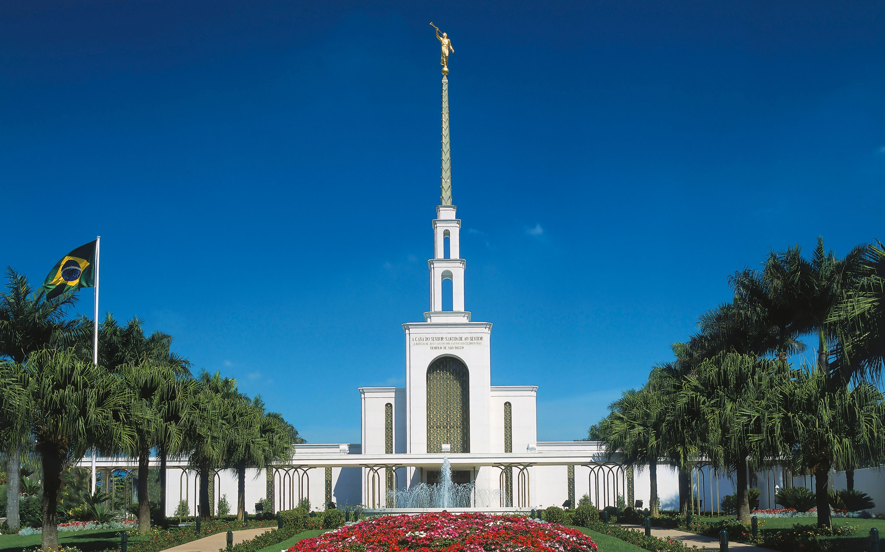
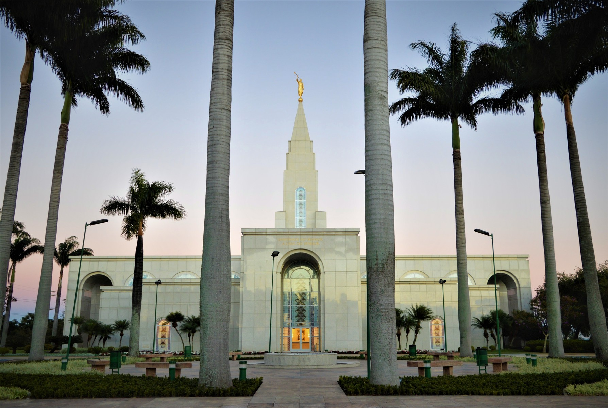
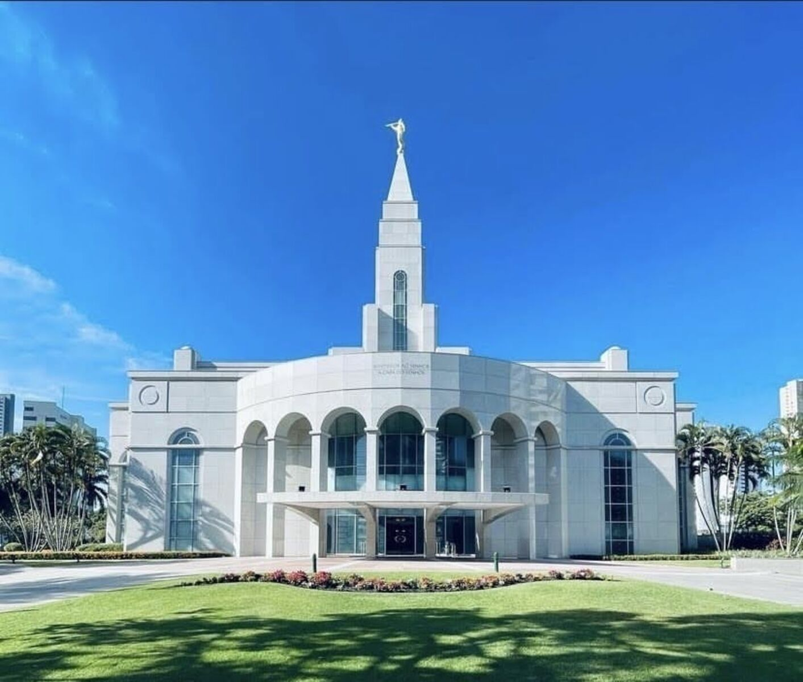
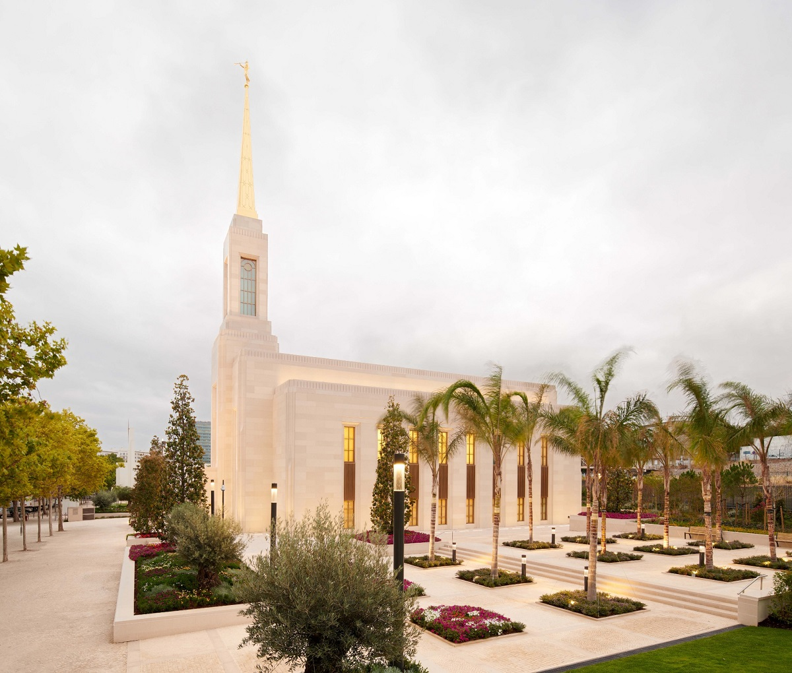
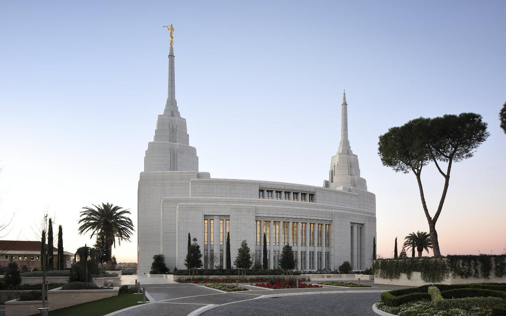
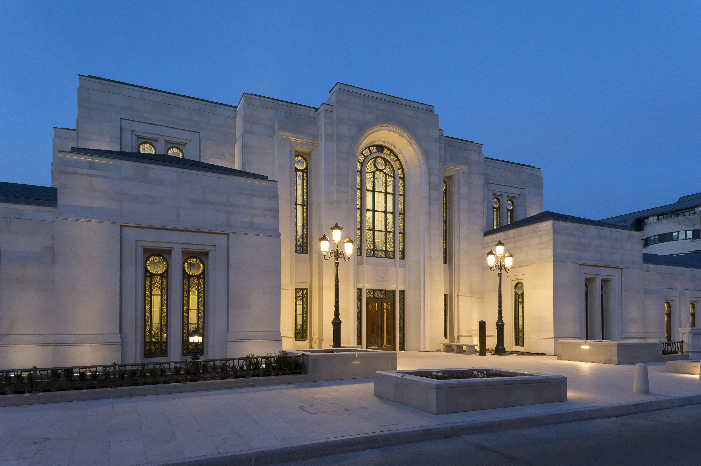

Página Inicial
Templo de Salt Lake City
Templo de San Diego, Califórnia

Templo de São Paulo, Brasil

Templo de Campinas, Brasil
Templo de Curitiba, Brasil

Templo de Recife, Brasil

Templo de Lisboa, Portugal

Templo de Roma, Itália

Templo de Paris, França